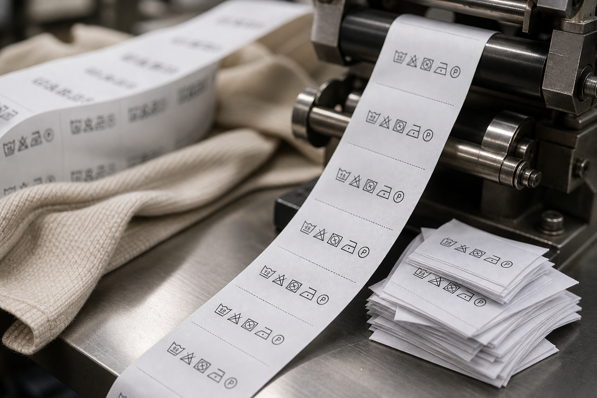

PFL
High-volume printed fabric label production with integrated cut, fold and curing support.
Operating five PFL printing machines with combined output of 2 million fabric labels per day allows stronger delivery planning for large-volume apparel and textile programs. The section also supports customization, repeat consistency and dependable long-term supply for garment branding and care-label requirements.
Dedicated PFL printing capacity supports high-volume fabric label programs with stable output planning.
Printed fabric labels can be tailored to client-specific care, branding and product identification requirements.
Printing, ultrasonic cut-and-fold handling and curing remain aligned in one organized production flow.
